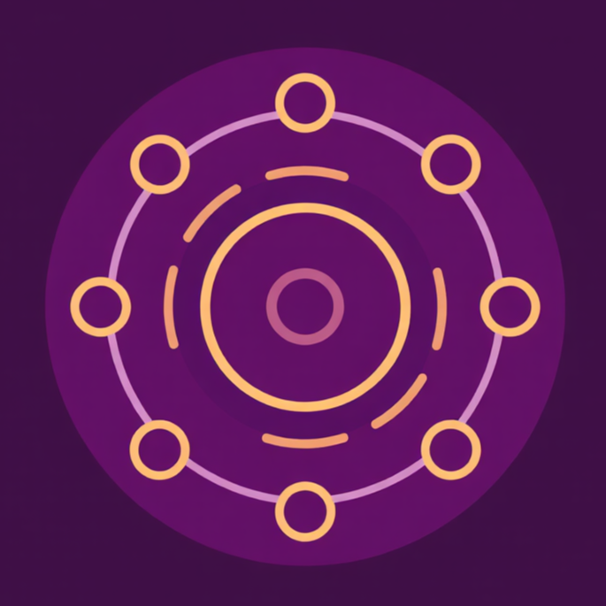
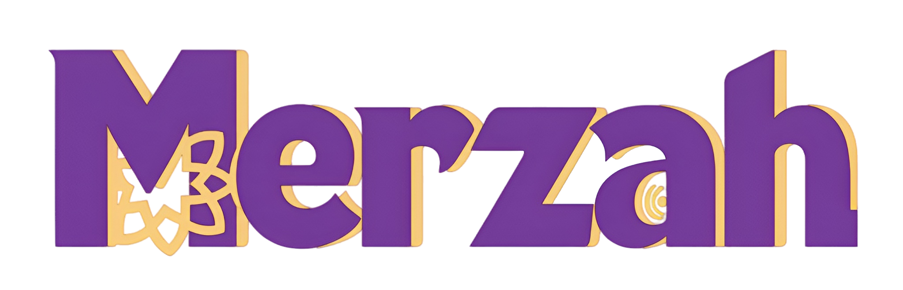

Merzah gathers your masjid, your neighbors, and your growth into one home for everyday faith. Join your community, stay close, and keep moving forward in deen and dunya, together every day.
No setup, no noise. Just your masjid and community in one place.
“If we want a better future for Muslims, we must excel first in deen, then in dunya. I started Merzah to help us grow in both, together.”
Become admin for your mosque: keep Adhan and Iqamah times updated, list your imam and muazzin, and publish events with RSVPs, all in one place.